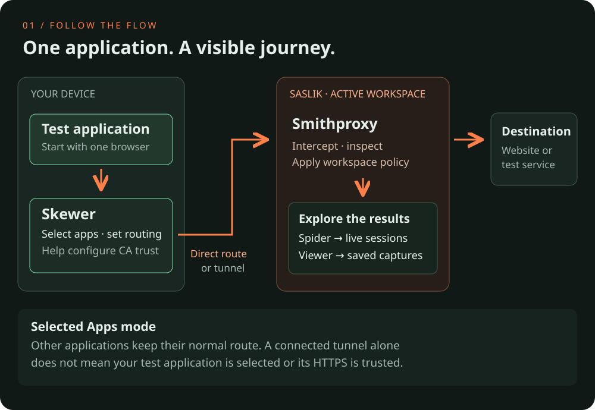

Saslik / Connect ItYour first traffic · visual guide
Saslik / Connect ItYour first traffic · visual guideThe big picture
Follow one application.

More details · about what you see
Not just a browser
Your test application could be an email client, a desktop app or a tool you want to understand. A dedicated test browser is simply an easy starting point.
Skewer is your connector
It selects applications and helps with routing and certificate trust. For remote connections, it can use Tuntom, the project’s own VPN tunnel component.
A workspace keeps a setup together
Saslik can keep several saved workspaces, with their own configuration and data. One workspace runs at a time.
Two views of the same experiment
Spider explores live sessions. PCAP Viewer examines capture files saved for later analysis.
Get ready
Install the Skewer client.
More details · about what you see
No portal login needed to download
Skewer installers are available in the public Connect It area. Portal credentials are for the analysis tools and administration.
Linux packages have dependencies
Install a DEB with your package manager so it can resolve dependencies. The release’s supported distribution versions matter; a DEB is not a promise of compatibility with every Ubuntu version.
Desktop first, mobile with a few caveats
For a first experiment, a Linux or Windows desktop is usually the simplest starting point. Mobile platforms give apps less freedom over routing and certificate trust, so setup can need extra care. On Android, individual apps may use their own trust rules.
Pair with Saslik
Pair Skewer with Saslik.
More details · about what you see
Two links, two jobs
The short discovery URL tells Skewer where Saslik is. It is not a credential. The pairing invitation contains a secret that authorizes enrollment.
One invitation, one completed pairing
After pairing completes, Saslik replaces the invitation. The old link cannot enroll another device; the paired client keeps its own credentials for later connections.
A QR code carries the same secret
Scanning saves typing, not security checks. Treat the pairing QR like its link: do not publish it or include it in screenshots.
Pairing is not a portal login
Connecting your device does not give you access to the administration or analysis portal. Those credentials come from your administrator.
Skewer · CA Trust
Install HTTPS trust in Skewer.
More details · about what you see
Trust only what you need
Install into the test app or profile you actually use. You do not need both browser and system trust; a shared system store can affect other applications.
Applications can have their own rules
Some use their own certificate store or certificate pinning. Installing a CA in the operating system does not guarantee that every app will accept it.
Mobile trust is less straightforward
Android apps may reject user-installed CAs. Trust coverage and installation steps vary by platform and app; a dedicated desktop test browser is a simpler first HTTPS experiment.
Keep the test contained
Prefer a dedicated test device or browser profile. Installing this workspace CA allows it to be trusted for intercepted HTTPS connections.
Skewer · Applications
Attach your test browser to Skewer.
More details · about what you see
Already-open connections may stay put
Connections opened before you attach an app may keep their old route. Some Skewer versions offer a connection-reset option — on Linux, this can close existing TCP connections so the app can reconnect through the new route. Availability varies by platform, and reconnection depends on the app.
Choose which apps join the experiment
Other applications keep their normal route. Start small so you can recognize which traffic belongs to your experiment.
Saslik portal → Smithproxy Spider
Inspect your first request in Spider.
More details · about what you see
Look for a recognizable event
A fresh request to a known destination is easier to identify than a busy page with dozens of background connections.
Live does not mean saved
Seeing a session in Spider does not guarantee there is a capture file. Recording must be enabled and produce a file before you can inspect it later.
No internet required for the experiment
An administrator-provided local test service works too. The destination simply needs to be reachable from the workspace.
Saslik portal → PCAP Viewer
Return to your saved captures.
More details · about saved captures
Not an automatic history of everything
A capture contains only what was recorded. If recording was not enabled, a live Spider session may have no corresponding file.
The files live with Saslik
When Saslik runs on a remote machine or VM, the viewer browses that workspace’s storage, not your computer’s Downloads folder.
Evidence can be sensitive
Captures may contain private content or credentials. Keep test data separate and review files before sharing them.
Find the missing link
Where does it stop?
Cannot reach Saslik or connect the tunnel?
Check the portal host and port. For a tunnel, check pairing and whether the workspace and tunnel service are available. Give the administrator the error, not your pairing secret.
HTTP works, HTTPS fails?
Check the workspace CA in the application's own trust store. The portal certificate alone is not enough. Some apps use certificate pinning.
Connected, but no traffic or captures?
Check that routing is enabled and the app is selected. Generate a fresh request and find it in Spider. Saved captures require capture to be enabled.
Cannot use Skewer?
Configure the HTTP CONNECT or SOCKS5 endpoint from Connect It in your application. No internal workspace route is needed. Enable remote DNS for SOCKS5. For inspected HTTPS, install the workspace CA in the application.
Traffic stopped after a workspace outage?
Selected traffic may remain blocked while the workspace is unavailable. Check Skewer status, wait for recovery or use Disable to release routing.